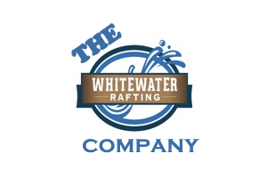

Overview
Purpose
From a very early age I fell in love with White Water River Rafting. The thrill of the rushing water pushing me down the river. I want to bring that excitement to the world. Our website has the latest information, products, and reviews of the best places to go river rafting. So let my passion become yours and remember adventures are best when shared with friends and rapids.
Audience
Target Audience are adventure seekers in the age group of 20-50 who enjoy the outdoors and high adventure. White water river rafting enthusiasts want a website that links them with reviews of the best equipment. Best places to rvier raft. And a place to meet and chat with like-minded people who enjoy the sport. Most access is done by mobile devices and the biggest unmet need is a place with real time updates on river conditions and white water rafting hot spots.
Branding
Website Logo
Style Guide
Color Palette
Primary Color - 7692FF Cornflower Blue Secondary Color - ABD2FA Uranian Blue Accent 1 Color - 3D518C Ylnmn Blue Accent 2 Color - 1B2CC1 Persian Blue Palette URL: https://coolors.co/091540-7692FF-ABD2FA-3D518C-1B2CC1
Typography
Headings Example Font
Normal Text/Paragraph Example Font
Montserrat - sans-serif
Colored Callout Example Font
Montserrat - sans-serif
Navigation
Wireframes
Home Page Wireframe

About Us Page Wireframe